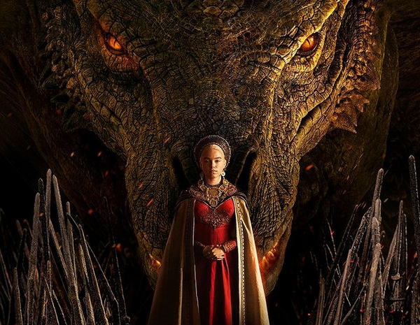
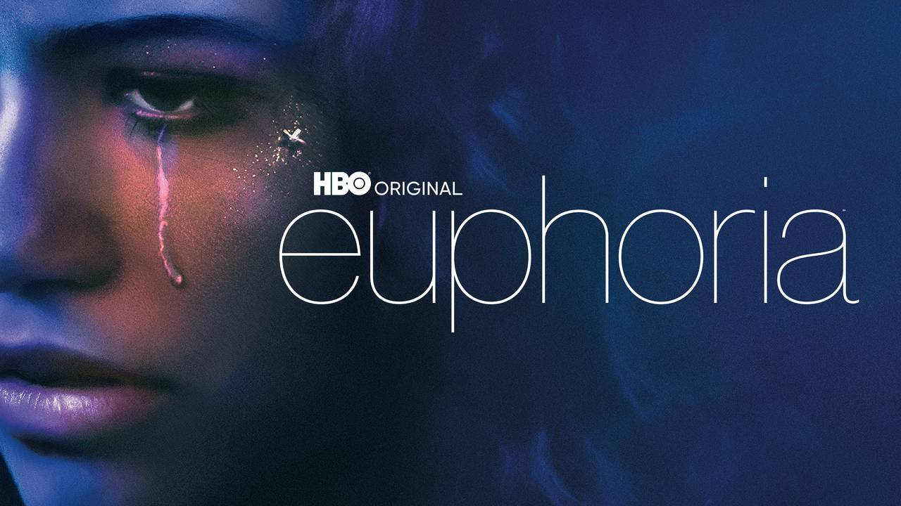
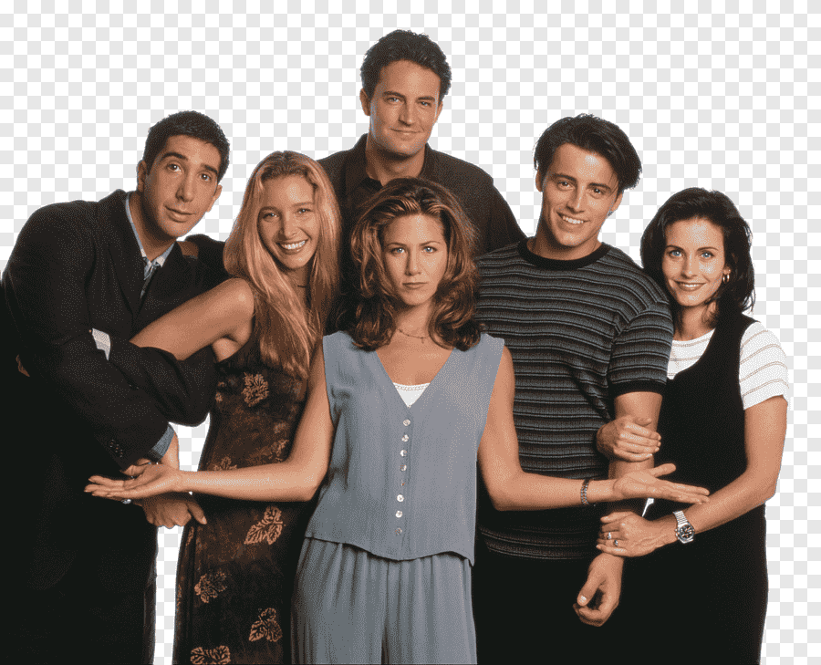
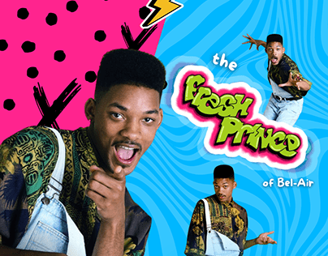

Baseada no livro Fogo & Sangue de George R. R. Martin, House of the Dragon é um spin-off de Game of Thrones
que narra a história de conquista de terras em Westeros, mais conhecida como a Dança dos Dragões.
Situada mais de 200 anos antes dos eventos da série original, em A Casa do Dragão acompanhamos a guerra civil que acontece
enquanto os meio-irmãos Aegon II (Tom Glynn-Carney) e Rhaenyra (Emma D'Arcy) almejam o trono após a morte do pai Viserys I (Paddy Considine).
Rhaenyra é a filha mais velha, contudo, Aegon é o filho homem de um segundo casamento,
o que acaba gerando uma crescente tensão entre dois clãs Targaryen sobre quem tem o verdadeiro direito ao trono.
Como descrito em Game of Thrones, no tempo em que a família Targaryen dominava os 7 reinos, a casa era conhecida por seus imponentes dragões,
que assim como a família, acabaram praticamente extintos após o conflito interno.

Em Euphoria, Rue Bennett (Zendaya) é uma jovem de 17 anos que acaba de sair da clínica de reabilitação após ter uma overdose.
Rue sofre com transtornos mentais desde criança, o que a fez entrar em contato com drogas ainda no início da adolescência.
Ela tenta agora se adaptar a uma vida "limpa" e volta a frequentar a escola.
Mas, assim como ela, os demais alunos do ensino médio enfrentam seus próprios desafios, envolvendo sexo,
drogas, amizades, relacionamentos amorosos, conflitos familiares, redes sociais e violência.
À medida que luta contra a dependência química, Rue precisa lidar com todos os traumas e segredos da adolescência.
Ela encontra apoio em uma nova amiga, Jules (Hunter Schafer), uma adolescente transgênero que acabou de se mudar para a cidade com o pai.
A princípio, Jules tem suas próprias questões para lidar, porém, aos poucos, essa amizade vai se transformando em um intenso interesse amoroso.

Seis jovens são unidos por laços familiares, românticos e, principalmente, de amizade, enquanto tentam vingar em Nova York.
Rachel é a garota mimada que deixa o noivo no altar para viver com a amiga dos tempos de escola Monica,
sistemática e apaixonada pela culinária. Monica é irmã de Ross, um paleontólogo que é abandonado pela esposa, que descobriu ser lésbica.
Do outro lado do corredor do apartamento de Monica e Rachel,
moram Joey, um ator frustrado, e Chandler, de profissão misteriosa. A turma é completa pela exótica Phoebe.

A série conta a história de Will (Will Smith), um jovem de origem humilde que se muda para um luxuoso bairro na Califórnia.
Após arrumar confusão com pessoas perigosas de seu bairro, na Filadélfia, a mãe de Will, temendo pelo futuro de seu filho,
resolve mandá-lo para viver com sua irmã Vivian (Janet Hubert-Whitten) e seu cunhado Philip (James Avery),
um advogado que se tornou juiz e tem uma vida muita bem sucedida.
Contudo, por ser um garoto humilde e não ligar para os estudos, Will vive se comportando de maneira inadequada
e provocando trapalhadas aos seus tios e primos na mansão.